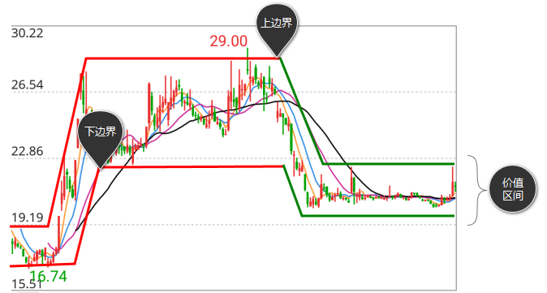
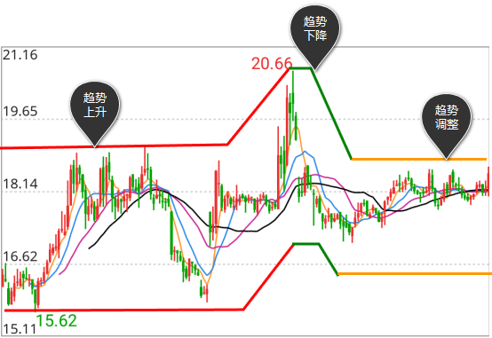

价值分析是股票等虚拟资本的流通价值取向的研究系统，应用的指标包括价值区间（上边界、下边界）和价值趋势。
1）价值区间
价值区间是指由股票等虚拟资本的流通量（Volume）和参与资金（Money）的交换程度（M/V）来决定的价格波动范围。该区间范围的边界包括上边界和下边界。
在图中两平行实线中上面一条为上边界，下面一条为下边界，实线中间区域为价值区间。

- 边界上升，价值区间上移，同时有T点出现，说明是资金流入带来上升动力
- 边界上升，价值区间上移，没有T点出现，说明是股票惜售带来上升动力
- 边界下降，价值区间下降，同时有L点出现，说明是资金流出带来下降动力
- 边界下降，价值区间下降，没有L点出现，说明是股票抛售带来下降动力
价值趋势上升的价值区间是上升区间，上升区间的上边界值是价格上升的目标，下边界值是价格回落的支持。在上升区间中，当价格回落到下边界之上时买入，当价格跌破下边界时止损卖出。
价值趋势下降的价值区间是下降区间，下降区间的下边界值是价格下降的目标，上边界值是价格回升的阻力。在下降区间中，当价格回升到上边界之下时卖出，当价格涨过上边界时回补买入。
2）价值趋势
价值趋势是指价值区间动向的持续性。
价值趋势有三种：
a.价值趋势上升是指价值区间动向的持续性向上，在图中用红色实线表示。
b.价值趋势下降是指价值区间动向的持续性向下，在图中用绿色实线表示。
c.价值趋势调整是指价值区间动向的持续性出现混沌，在图中用黄色实线表示。

- 当价值区间由上升得来，买方占优，上升动力足以维持价值区间的现状，是价值投资者选股的条件
- 当价值区间由下降得来，卖方占优，下降动力足以维持价值区间的现状，价值投资者应做风险回避
- 当价值趋势由上升至调整，维持价值上升的动力不足，价值区间进入混沌，价值投资的风险增加
- 当价值趋势由下降至调整，维持价值下降的动力不足，价值区间进入混沌，价值投资的风险下降
- 当价值趋势由调整至上升，价值区间由混沌进入上升，买方重新占优，是价值投资者选股的条件
对技术分析者的应用原则是：用价值趋势辨识价格趋势。在价值趋势上升中，价格下跌是买进时机；在价值趋势下降中，价格回升是卖出时机。
对价值分析者的应用原则是：在价值趋势上升中买进并持股；在价值趋势下降中卖出并持币。